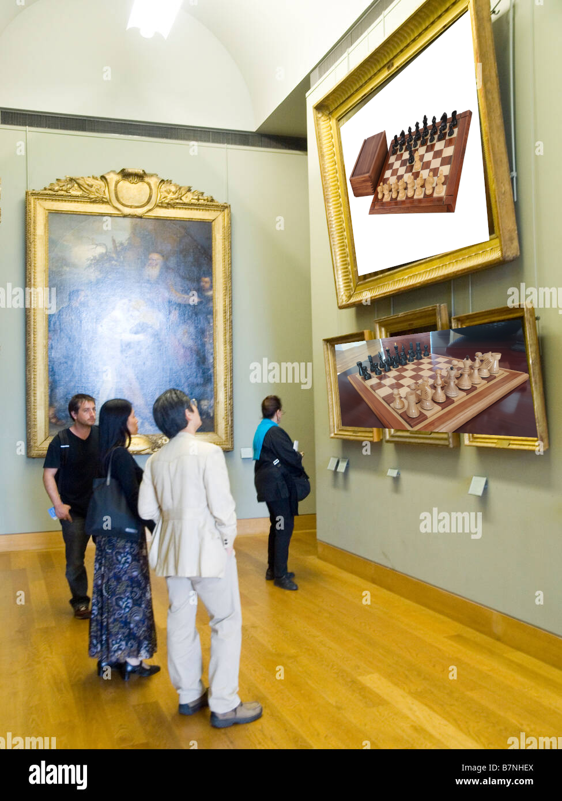

This shitty game is one of my most hated things in my life but I still want to improve because the humilliation of lose is so big that I can not support it. This is a small guide of how to understand this diabolic game and play decently.
I am far away of being a good player on chess, but I consider that I am good enough to get some wins.
For this guide you need to use a virtual board to figure some stuff. In general you need to understand the rules of how to play chess and algebraic chess notation.

People admiring some of the most destructive things that an human has created.
This is a memory and pattern recognition game. There is no magic here. It is not a guru’s game or stuff like that. Is a skill that you will get practicing, losing a big amount of games and practicing alone. Use Lichess to play.
Always search for a checkmate to the enemy pieces. Do not lose time in other distractions, like eating other pieces or get in better position when you can checkmate.
Once you learn the basic tactics that I will present you above, the rest of the game is pattern recognition about what it comes next.
When you are about to move a piece, watch the future about possible movements and ALWAYS select the most destructive path that can happen to you. The other player wants to win too. At least 3 or 4 possible ways with at least 4 or 5 movements per line. Calculate more if it is a hard opponent.
There exist a big ammount of shitty stuff on internet. Chess is not the exception. If you want to improve, just play unranked games on Lichess and select the biggest elo players that Lichess will let you play. The only way to learn something, is by exposition. Another resource is wikipedia chess articles and if you are advanced enough and have a elephant memory, use Modern Chess Openings book to learn openings. The only way to learn tactics is by repetition. No more science.
Do not make a move with one posibility to happen. You will extremely lose every game if you do not make bait moves, traps, or stuff that will confuse or make optionless your opponent. Absolutely all your movements has to make another thing if your original plan does not work as you expected.
They are patterns that happen often in the game. You have to memorize a good amount of this strategies and apply them when you can see them when you are playing.
Wikipedia has a good ammount of resources on definitions of tactics. Use it.
You will not have to learn much about openings at the begining, but in essence this are movements that theoretically are the best for your game in function of the movements that your opponent do.
It is hard to make a good guide to openings, so I can not gave any opinion on that. The most that I can say is to learn the basic of an opening and understand where is attacking, where is deffending, responses to some movements and the rest is up to you.
Do not think too much about openings. Soon or late you will play some openings without knowing about it. You will memorize some of then because you will lose so much on some opening traps that you will remember the correct line to continue playing.
When no plan that you build has worked before, then the punishment continues in this last but not painless situation. The endgame. Here you will try to get a passed pawn and promote to a queen, destroy some of the two flanks of your rival and simplify your position to make your opponent with less options to destroy you. In the endgame you will have some of your pawns and one of this configuration of pieces: a) TODO: Put pieces configurations
Use unranked lichess games and chesstempo to practice tactics (here are a good amount of good problems). You can use lichess problems too, but chesstempo in general is better, that is what internet say.

The humilliation ritual at his starting point.
Here are some secret tactics that you can use to win any chess game and will be useful for you to win that opponent that is completely stronger than you.
When you can, take advantage of your oponent distraction and grab a piece and eat it. Try to grab the easiest to digest like a tower or a pawn. At first will hurt you, but your need to win will make you tolerate the pain.
Install lichess and start an analysis board and do all the movements that are happening in the board. Then, select the movement that stockfish says that will get you better chances to win. Use your phone wisely and try to excuse you that your girlfriend, a mother or something that looks important to you needs your attention on the phone. You can win a match if you do it wisely.
Try to put pressure to make a choose. Say stuff that can deconcentrate, making laugh them or anything that is useful to make them lose control on their abilities of playing the game. Useful in unranked games and IRL encounters.